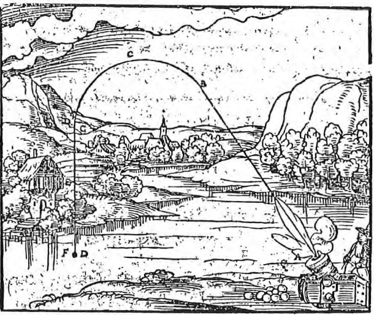
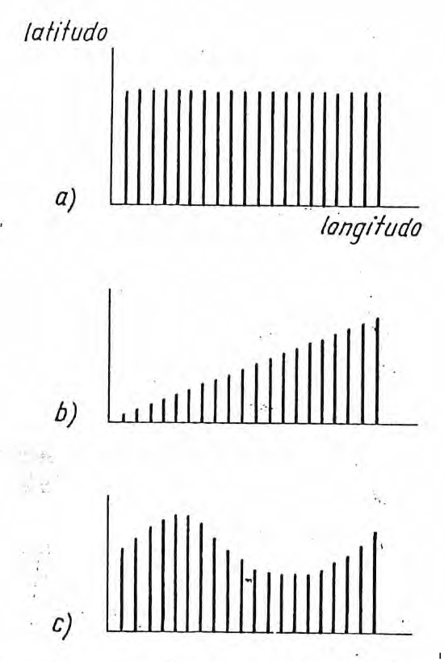
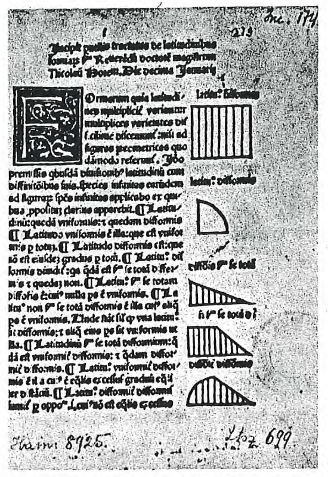
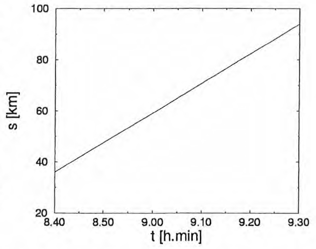
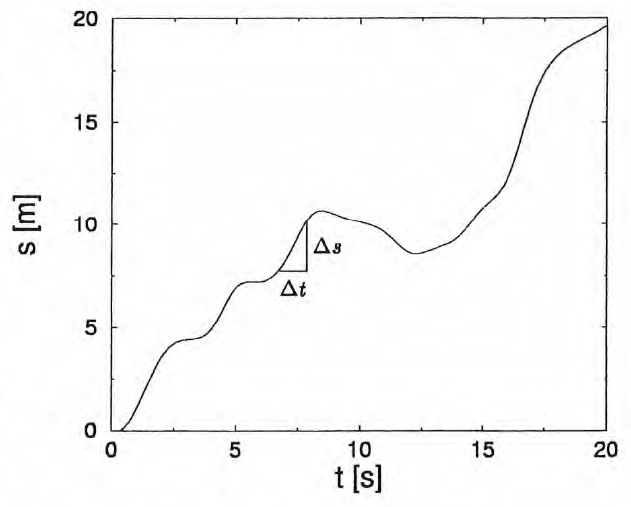
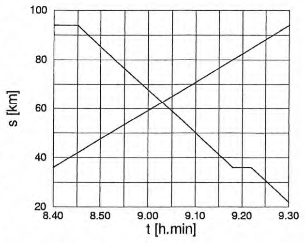
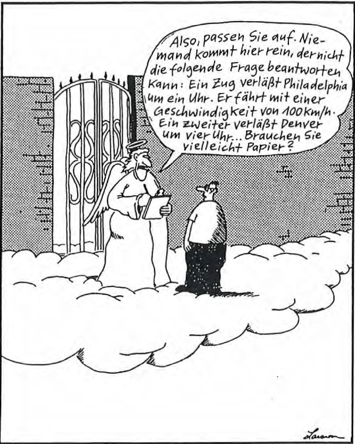

Lernziele, Zusammenfassung und Skript
Thematische Kapitelübersicht mit Verlinkungen ins Skript
(diese Seite)
Gegen Ende des Mittelalters stellten einzelne Gelehrte die aristotelische Physik ernsthaft in Frage. Sie haben begonnen, Bewegungen nicht nur qualitativ, sondern quantitativ zu beschreiben — mit ähnlichen Methoden, wie das heute noch tun: mit Hilfe von Funktionen. Daran knüpfen wir in diesem Kapitel an und beschreiben zunächst Bewegungen mit gleichbleibender Geschwindigkeit genauer. Dabei werden wir unsere Definition der Geschwindigkeit präzisieren und auf weitere Fragen im Zusammenhang mit Bewegungen und Geschwindigkeiten eingehen. Einiges davon wird die Repetition dessen sein, was wir in der Mathematik darüber gelernt haben.
Thematische Kapitelübersicht mit Verlinkungen ins Skript
(diese Seite)

Aufgaben zum Kapitel und zusätzliches Übungsmaterial

Lernvideos und Tutorials

Lösungen zu Übungen und Kurzfragen
Das antike griechische Wissen wurde im 12. Jahrhundert in Europa aufgenommen. Namentlich THOMAS VON AQUINO passte das aristotelische Weltbild der christlichen Religion an. So wurde der Aristotelismus christlicher Prägung zum Dogma der mittelalterlichen Naturphilosophie.
Bereits PHILIPONOS kritisierte um 600 n. Chr. die aristotelische Dynamik. Dabei nahm er Ideen vorweg, die BURIDAN in seiner Impetus-Theorie vertrat: Jedem Objekt, das in Bewegung gesetzt wird, wird dadurch ein Impetus erteilt, der es weiterbewegt. Das Objekt bewegt sich also von selbst weiter — bis der Impetus z.B. durch den Luftwiderstand vernichtet worden ist. Diese Theorie steht klar im Widerspruch zur aristotelischen Dynamik, nach der ein Körper dauernd angetrieben werden muss, wenn er sich bewegen soll.
NICOLE D'ORESME und die Gelehrten des Merton College entwickelten die bisher nur qualitativ betrachteten Grössen zu quantitativen.
ORESME zeichnete Geschwindigkeit-Zeit- Diagramme (kurz \(v-t-\)Diagramme). Darin wird die Zeit \(t\) waagrecht und die Geschwindigkeit \(v\) senkrecht aufgetragen. Zu jedem Zeitpunkt wird die zugehörige Geschwindigkeit eingetragen.
ORESME unterschied zwischen gleichförmiger, gleichmässig beschleunigter und ungleichförmiger Bewegung.
ORESME widerlegte die Argumente, welche gegen die Drehung der Erde sprachen.
Eine Bewegung kann in ein Weg-Zeit- Diagramm (kurz s-t-Diagramm) eingezeichnet werden (waagrechte Achse: Zeit \(t\), senkrechte Achse: Strecke \(s\)).
Die (momentane) Geschwindigkeit ist definiert als \[ v = \frac{\Delta s}{\Delta t} \quad \text{(\(\Delta t\) und \(\Delta s\) klein genug)} \] Bei einer ungleichförmigen Bewegung ändert sie dauernd, weshalb zu ihrer Berechnung die während einer möglichst kurzen Zeit \(\Delta t\) zurückgelegte Wegdifferenz \(\Delta s\) verwendet werden muss.
Die Geschwindigkeit ist die Steigung im \(s-t-\) Diagramm.
Die Durchschnittsgeschwindigkeit einer ungleichförmigen Bewegung berechnet man wie folgt (mit Startweg \(s_{0}\) und Startzeit \(t_{0}\): \[ \begin{array}{rcl} \bar v & = & \cfrac{s - s_{0}}{t - t_{0}} \\ mit\,t_{0} = s_{0} = 0: \quad \bar v & = & \cfrac{s}{t} \end{array} \]
Bei einer gleichförmigen Bewegung bleibt die Geschwindigkeit konstant (symbolisch: \(v = const\)). Daher gelten hier die obigen Formeln auch für die (konstante) Moment angeschwindigkeit (die natürlich gleich der Durchschnittsgeschwindigkeit ist). Daraus folgt für die gleichförmige Bewegung: \[ \begin{array}{rcl} s(t) & = & v(t - t_{0}) + s_{0} \\ mit\,t_{0} = s_{0} = 0: \quad s(t) & = & vt \end{array} \]
Bewegungen müssen immer relativ zu einem Bezugssystem betrachtet werden. Die geschickte Wahl des Bezugssystem (z.B. das Recluien mit Relativgeschwindigkeiten) kann eine Aufgabe erheblich vereinfachen.
Gleichgerichtete, sich überlagernde Geschwindigkeiten werden addiert, entgegengesetzt gerichtete subtrahiert.
Treffpunkt und -zeit zweier (gleichförmiger) Bewegungen können wir aus der Relativbewegung berechnen oder mit dem Gleichungssystem, das aus den beiden zugehörigen Funktionsgleichungen besteht.
Mit dem Niedergang des weströmischen Reiches
ging in Europa das altgriechische Wissen
weitgehend verloren. Allerdings wurde es im
byzantinischen (oströmischen) Reich weit ergegeben,
aber kaum weiterentwickelt. Eine Ausnahme
war JOHANNES PHILIPONOS (um 600 n.
Chr.). Er kritisierte die aristotelische Physik.
Er vertrat die Idee, dass die werfende Hand
dem Stein eine 'Kraft' einprägt, die nun den
Stein eine Weile weitertreibt, bis sie sich am
Widerstand des Mediums langsam verbraucht
hat. Weiter stellte PHILOPONOS fest, dass unterschiedlich
schwere Körper praktisch gleich
schnell fallen.
Im westlichen Europa hatte sich unterdessen
im praktischen Bereich nach und nach eine
technische Revolution vollzogen, welche dadurch
gefordert wurde, dass in den Klöstern
sowohl geistige als auch körperliche Arbeit geleistet
wurde. Zudem wurden Universitäten gegründet.
Dort wurde zwar oft dogmatisch gelehrt.
Es entwickelte sich aber eine intellektuelle
Streitkultur in der Form des Disputs, der
sogar als Prüfungsform praktiziert wurde.
Erst im 12. Jahrhundert wurden die naturphilosophischen
Schriften des ARISTOTELES
und weiterer antiker Gelehrter in Europa aufgenommen,
als sie — überliefert durch die Araber
— ins Lateinische übersetzt wurden. Namentlich
THOMAS VON AQUINO (1225-1274)
passte das Aristotelische Weltbild der christlichen
Religion an. Z.B. musste aus dem ewig
bestehenden Kosmos eine Welt werden, die geschaffen
wurde und auf das jüngste Gericht zusteuert.
Weiter mussten ausserhalb der Sternensphäre
weitere Himmel bereit gestellt werden
(das Reich der Seeligen, die Sphären der
Engel und der Ort Gottes). Damit wurde der
Aristotelismus christlicher Prägung zum Dogma
der mittelalterlichen Naturphilosophie und
erstarrte schliesslich in der damaligen Autoritätsgläubigkeit.
Doch vor allem im 14. Jahrhundert wurde
die aristotelische Lehre da und dort in Europa
kritisiert und man ging über das Überlieferte
hinaus. Der an der Pariser Universität lehrende
JEAN BURIDAN (1290-1360) entwickelte die
sogenannte Impetus-Lehre, die den Ideen von
PHILIPONOS ähnelt:
Darum scheint mir, wir müssen schliessen, dass ein Beweger, wenn er einen Körper bewegt, diesem einen bestimmten Impetus aufdrückt, eine bestimmte Kraft, die diesen Körper in der Richtung weiterzubewegen vermag, die ihm der Beweger gegeben hat, sei es nach oben, nach unten, seitwärts oder im Kreis. Der mitgeteilte Impetus ist in dem gleichen Masse kraftvoller, je grösser der Aufwand an Kraft ist, mit dem der Beweger dem Körper Geschwindigkeit verleiht. [...] Aber wegen des Widerstandes der Luft und auch der Schwerkraft des Steins, die ihn ständig in eine dem Streben des Impetus entgegengesetzte Richtung zwingen möchte, wird der Impetus immer schwächer. [...] Schliesslich ist der Impetus so weit geschwächt oder vernichtet, dass die Schwerkraft des Steines überwiegt und den Stein abwärts zu seinem natürlichen Ort bewegt. [...]
Denn wenn man fragt, warum ich einen Stein weiter werfen kann, als eine Feder [...], so sage ich: [...] Je grösser also die Masse an Materie ist, die der Körper enthält, desto mehr an Impetus kann er aufnehmen und desto grösser ist die Intensität, mit der er ihn aufnehmen kann. [...] Eine Feder bekommt einen so schwachen Impetus, dass dieser alsbald vom Luftwiderstand zerstört wird; [...]. Aus dem gleichen Grunde ist es schwerer ein grosses Mühlrad mit grosser Drehgeschwindigkeit zum Halten zu bringen als ein kleineres Rad. Auch wenn das übrige gleich ist, so hat doch das grössere Rad mehr Impetus als das kleinere. [...]
Darin scheint mir auch der Grund zu liegen, weshalb der natürliche Fall schwerer Körper eine ständige Beschleunigung erfährt. Zu Beginn des Falles bewegte allein die Schwerkraft den Körper: er fiel langsamer. Aber im Verlauf des Bewegens teilte diese Schwerkraft dem schweren Körper einen Impetus mit, der zugleich mit der Schwerkraft den Körper bewegt. Daher wird die Bewegung schneller, und in dem Masse wie sie schneller wird, wächst der Impetus. Es ist offensichtlich, dass die Bewegung stetig beschleunigt wird.
Jeder der springen will, nimmt einen langen Anlauf, damit er schneller laufen und dadurch einen Impetus gewinnen kann, der ihn beim Sprung über eine lange Strecke trägt. Im Laufen und Springen fühlt er sich keineswegs von der Luft bewegt; er empfindet vielmehr die Luft vor sich als starken Widerstand.
Mit der Impetus-Theorie wurde die Wurfbahn so erklärt, wie es in Bild 2.1 dargestellt ist (siehe Text zum Bild).
 Bild 2.1: So erklärt die Impetus-Theorie die Wurfbahn: Die Kugel erhält anfangs einen Impetus (eine Art innere Kraft), der die Kugel geradlinig weiterbewegt. Dieser Impetus nimmt jedoch ab. Nach einer Weile kann er deshalb die Schwere der Kugel nicht mehr kompensieren: die Bewegung wird bogenförmig. Ist der Impetus schliesslich völlig verbraucht, fällt die Kugel senkrecht zu Boden. Diese Erklärung kommt der Wirklichkeit zwar näher als jene der aristotelischen Physik (vgl. Bild 1.6), ist so aber immer noch nicht richtig.
In der aristotelischen Physik wurde die Geschwindigkeit
im Wesentlichen als qualitative
Grösse betrachtet, d.h. nur durch die Begriffe
"schnell" - "langsam" beschrieben. BURIDANS
Schüler, NICOLE D'ORESME (1325-1382)
und die Gelehrten des Merton-College in Oxford
entwickelten die Geschwindigkeit zu einer
quantitativen Grösse, d.h. ordneten ihr Zahlen
zu. Zudem wurden auch andere Eigenschaften
zu quantitativen Grössen entwickelt (z.B. die
Temperatur, allerdings ohne genaue Definition).
Wir beschränken uns hier aber auf die Geschwindigkeit.
Diese neuen Quantitäten stellte ORESME
in Diagrammen dar. Z.B. wurden
Geschwindigkeit-Zeit-Diagramme (kurz \(v-t-\)Diagramme) gezeichnet (wie wir es heute
nennen): Auf einer waagrechten Achse wurde
die Zeit aufgetragen (siehe Bilder 2.2 und
2.3). In gleichmässigen Zeitabständen wurde
jeweils eine Linie gezeichnet, deren Längen die jeweilige
Geschwindigkeit
angibt.
 Bild 2.2: Geschwindigkeit-Zeit-Diagramme (kurz \(v-t-\)Diagramme): ORESME unterschied a) die gleichförmige Bewegung (gleichbleibend), b) die gleichmässig beschleunigte (gleichbleibende Veränderung) und c) die ungleichmässig veränderliche Bewegung (ändernde Veränderung).
Was ORESME gezeichnet hat sind (in unserer
heutigen Sprache) Funktionsgraphen. Wir
würden allerdings nur die obersten Punkte von
ORESMES senkrechten Linien ins Koordinatensystem
eintragen und diese Punkte verbinden.
ORESME hat also die Abhängigkeit der Geschwindigkeit
von der Zeit als Funktion betrachtet.
Dabei unterschied ORESME zwischen verschiedenen
Arten der Bewegung. In den heutigen
Begriffen sind dies:
 Bild 2.3: Eine Seite aus ORESMES Buch, wo Diagramme wie in Bild 2.2 gezeichnet sind.
Wir wollen ORESMES Idee einmal weiter verfolgen.
Dabei werden wir nicht auf der Stufe
des Mittelalters bleiben, sondern darüber
hinausgehen. (Den historischen Weg werden
wir später wieder aufnehmen.) Vieles, was die
Beschreibung von Bewegungen betrifft, wurde
nämlich erst später nach und nach geklärt.
In der Mathematik haben wir bereits
gleichförmige und gleichmässig beschleunigte
Bewegungen beschrieben, nämlich im Zusammenhang
mit den linearen und quadratischen
Funktionen. In diesem Kapitel wollen wir uns
vorwiegend mit den gleichförmigen Bewegungen
genauer beschäftigen. Die gleichmässig beschleunigten
werden wir im nächsten Kapitel
genauer unter die Lupe nehmen.
Das \(v-t-\)Diagramm einer gleichförmigen Bewegung
sieht etwa so aus wie Bild 2.2a. Wir
würden allerdings nur die Punkte an der Spitze
der Linien einzeichnen bzw. eine waagrechte
Gerade (die sich ergibt wenn wir diese Punkte
verbinden).
Wie hängt aber die Strecke \(s\) von der Zeit \(t\) ab? In der Mathematik haben
wir
gesehen, dass
die Funktion \(s(t)\) linear ist. Im \(s-t-\)Diagramm
ergibt sich eine Gerade. Die Steigung dieser Geraden
ist die Geschwindigkeit \(v\). Die Funktionsgleichung
lautet:
\[ s(t) = vt + s_{0} \]
Dabei ist \(s_{0}\) die Strecke, bei der das Hütchen
zur Zeit \(t=0\) startet. (Tatsächlich: für \(t = 0\)
ist \(s(0) = s_{0}\).) Im \(s-t-\)Diagramm ist \(s_{0}\) der \(s-\)Achsenabschnitt. (Der Punkt auf der \(s-\)Achse
gehört ja zur Zeit \(t = 0\).)
Wenn in der Funktionsgleichung \(s = vt + s_{0}\)
die Startstrecke \(s_{0}\ne0\) ist, dann gilt für die
Geschwindigkeit nicht einfach \(v = \frac{s}{t}\). Wenn wir
die Formel nach \(v\) auflösen, erhalten wir:
\[ v= \frac{s-s_{0}}{t} \]
Das ist klar: Wir starten zur Zeit \(0\) bei der
Streckenmarkierung \(s_{0}\). Nach der Zeit \(t\) (Zeit
seit dem Start) sind wir bei der Streckenmarkierung \(s\).
Dann haben wir in dieser Zeit \(t\)
die Strecke \(s — s_{0}\) zurückgelegt. Die Geschwindigkeit
ist das Verhältnis der zurückgelegten
Strecke \((s — s_{0})\) zur dafür benötigten Zeit \((t)\).
Auch für die in Bild 2.4 dargestellte Bewegung
gilt nicht einfach \(v = \frac{s}{t}\). Wir können
nicht einfach den Bahnkilometer \(s = 94\,km\)
(am Schluss der Fahrt) durch die zugehörige
Uhrzeit \(t = 9\,h\,30\,min\) dividieren, um die Geschwindigkeit
zu erhalten.
Wir müssen natürlich die gefahrene Strecke
durch die dafür benötigte Fahrzeit dividieren.
D.h. wir müssen mit Strecken- und
Zeitdifferenzen rechnen:
\[
\begin{array}{rcl}
v & = & \cfrac{94\,km - 36\,km}{9\,h\,30\,min-8\,h\,40\,min} \\
v & = & \cfrac{58\,km}{\frac{5}{6} h} \\
v & = & 69.6\,\frac{km}{h} \\
v & \approx & 70\,\frac{km}{h}
\end{array}
\]
(Das \(\approx\) bedeutet 'ungefähr gleich'.)
Eine Streckendifferenz schreiben wir bekanntlich
als \(\Delta s\). Zur Erinnerung: Das grosse
griechische Delta (\(\Delta\)) bedeutet, dass wir eine
Differenz der dahinter stehenden Grösse meinen.
Für eine Zeitdifferenz schreiben wir dann \(\Delta t\).
 Bild 2.4: \(s-t-\)Diagramm einer (idealisierten) Bahnfahrt: \(s\) ist durch die Bahnkilometer und \(t\) durch die Uhrzeit angegeben. Die Fahrt geht von Kilometer \(36\) bis Kilometer \(94\).
Damit definieren wir die Geschwindigkeit so: \[ v = \frac{\Delta s}{\Delta t} \]Die Fahrstrecke \(\Delta s\) (Streckendifferenz) erhalten
wir wie oben: Wir ziehen von der Strecke \(s = 94\,km\) (die der Zug nach der Zeit \(t\) erreicht
hat) die Startstrecke \(s_{0} = 36\,km\) ab (d.h. die
Strecke, bei welcher der Zug startet, vom Nullpunkt
des Bahnkilometer-Netzes gemessen):
\[ \Delta s = s - s_{0} \]
Allgemein steht \(s\) für die Strecke, die der Zug
nach einer beliebigen Zeit \(t\) erreicht hat. Die
Startstrecke \(s_{0}\) ist eine bestimmte Strecke, die
Zug zu einem bestimmten Zeitpunkt erreicht,
nämlich zur Startzeit \(t_{0}\). Um diese spezielle
Strecke zu kennzeichnen, haben wir dem
Symbol \(s\) eine kleine Null angehängt. Die
angehänge Null ist ein sogenannter 'Index'
(Mehrzahl 'Indizes'), mit dem man sonst gleiche
Symbole voneinander unterscheiden kann.
Dadurch können wir \(s_{0}\) von der Strecke \(s\) unterscheiden,
die der Zug nach einer beliebigen
Zeit \(t\) erreicht.
Dementsprechend unterscheiden wir die
Startzeit \(t_{0} = 8\,h\,40\,min\) von der Zeit am Ende der Bewegung \(t = 9\,h\,30\,min\).
Die Fahrzeit \(\Delta t\) (Zeitdifferenz) ist dann:
\[ \Delta t = t - t_{0} \]
(Für \(t\) können wir auch eine beliebige andere
Zeit wählen, wenn wir für \(s\) die zu dieser Zeit
erreichte Strecke einsetzen.)
Somit lautet unsere Geschwindigkeitsdefinition:
\[ v = \frac{\Delta s}{\Delta t} = \frac{s-s_{0}}{t-t_{0}} \]
Im \(s-t-\)Diagramm ist die Geschwindigkeit \(v\)
nach wie vor die Steigung der Geraden. (Zeichne
in Bild 2.4 das Steigungsdreieck ein, das der
obigen Formel entspricht.)
Wir könnten in unserem Beispiel die Zeit
und den Weg umdeflnieren, indem wir die Uhr
um 8.40 Uhr starten (d.h. \(t_{0} = 0\) setzen) und
die Strecke ab dem Startort messen (d.h. \(s_{0} = 0\) setzen). Dann folgt aus der obigen Formel
\(v = \frac{s}{t}\) Tatsächlich ist in diesem Fall \(s\) selbst
die Fahrstrecke und \(t\) ist die Fahrzeit.
Wie können wir den Bahnkilometer \(s\) zu irgend
einem beliebigen Zeitpunkt \(t\) berechnen?
Nun, wir können einfach die obige Formel nach
\(s\) auflösen (beide Seite mit \((t — t_{0})\) multiplizieren
und dann \(s_{0}\) addieren):
\[
\begin{array}{rcl}
v & = & \cfrac{s - s_{0}}{t - t_{0}} \\
v (t - t_{0}) & = & s - s_{0} \\
s & = & v (t - t_{0}) + s_{0}
\end{array}\
\]
Das ist die Funktionsgleichung, mit welcher die
erreichte Strecke \(s\) nach jeder beliebigen Zeit \(t\) berechnet werden kann. Die
Geschwindigkeit \(v\), die Startzeit \(t_{0}\) und die Startstrecke \(s_{0}\) sind
Formvariablen, müssen also gegeben sein. Die
Formel leuchtet ein: \(t — t_{0}\) ist die Fahrzeit. Mit
\(v\) multipliziert ergibt sich die Fahrstrecke. Um
die erreichte Strecke zu erhalten, müssen wir
die Strecke \(s_{0}\), bei der wir gestartet sind, addieren.
Wenn wir die Werte aus unserem Beispiel
einsetzen, erhalten wir:
\[ s(t) = 69.6\,\frac{km}{h}(t - 8\,h\,40\,min) + 36\,km \]
Wenn \(t_{0} = 0\) und \(s_{0} = 0\) sind, starten wir
zur Zeit Null bei der Streckenmarkierung Null.
Dann ergibt sich wieder die einfachste Funktionsgleichung:
\[ s(t) = vt \]
Wenn die Bewegung zu irgendeiner Zeit \(t_{0}\) bei irgendeiner Streckenmarkierung \(s_{0}\) startet, dann wir die Gerade im \(s-t-\)Diagramm um \(t_{0}\) nach rechts verschoben und um \(s_{0}\) nach oben. In der Funktionsgleichung wird von \(t\) die Startzeit \(t_{0}\) subtrahiert und auf der rechten Seite der Gleichung \(s_{0}\) addiert. Zu den selben Regeln sind wir beim Verschieben von Parabeln auch gekommen...
In den bisherigen Beispielen bleibt die gegebene
Geschwindigkeit \(v\) während der Bewegung
unverändert: Der Weg nimmt mit der
Zeit gleichmässig zu. Wir sprechen deshalb von
gleichförmigen Bewegungen.
 Bild 2.5: \(s-t-\)Diagramm einer ungleichförmigen Bewegung
Die in Bild 2.5 dargestellte Bewegung hingegen ist eine ungleichförmige. Offensichtlich ändert die Geschwindigkeit dauernd. Denn in einer Sekunde wird einmal mehr und einmal weniger Strecke zurückgelegt.Die Momentangeschwindigkeit ist die jeweilige Steigung der Kurve im \(s-t-\)Diagramm. D.h. je steiler die Kurve im \(s-t-\)Diagramm, desto grösser ist die Geschwindigkeit. Das eingezeichnete Dreieck in Bild 2.5 nennen wir 'Steigungsdreieck'.
Um aber die Geschwindigkeit zu einem bestimmten Zeitpunkt (d.h. die Steigung der Kurve) zu erhalten, müssen wir tatsächlich \(\Delta t\) (und damit \(\Delta s\)) klein genug wählen, so dass wir ein Steigungsdreieck mit gerader Hypotenuse erhalten. Ist dies nicht der Fall, wird das Resultat offensichtlich verfälscht. Ändert sich die Geschwindigkeit (und damit die Kurvensteigung) dauernd, so müssten wir im Idealfall \(\Delta t\) und \(\Delta s\) unendlich klein werden lassen. In der Praxis müssen wir uns mit einer Annäherung an dieses Ideal begnügen.
Wenn wir die gesamte zurückgelegte Strecke
\(s — s_{0}\) durch die dafiir benötigte Zeit \(t — t_{0}\) dividieren
dann erhalten wir nicht die Momentangeschwindigkeit,
die ja dauernd ändert. Hingegen
ergibt sich die Durchschnittsgeschwindigkeit
\(\bar v\):
\[ \bar v = \frac{s - s_{0}}{t - t_{0}} \]
oder mit \(s_{0} = 0\) und \(t_{0} = 0\) (wie man in der
Praxis meist setzt):
\[ \bar v = \frac{s}{t} \]
Dabei ist \(s\) der gesamte zurückgelegte Weg
nach einer bestimmten Zeit \(t\).
Die exakte Definition der Momentangeschwindigkeit
stellte im Mittelalter und zu Beginn der Neuzeit ein Problem dar. Erst NEWTON
(mit dem wir uns später beschäftigen werden)
lieferte sie.
Wir bewegen uns mit einem Boot auf einem
Fluss, der gegenüber der Landschaft mit \(v_{F} = 7\,\frac{km}{h}\)
fliesst (Fliessgeschwindigkeit). \(500\,m\) von
uns entfernt schwimmt ein Baumstamm. Wir
rudern auf ihn zu, wobei wir uns gegenüber
dem Wasser mit \(v_{R} = 5\,\frac{km}{h}\) bewegen (Rudergeschwindigkeit).
Wie lange dauert es, bis wir
den Baumstamm erreichen?
Bevor wir diese Aufgabe lösen, machen wir
uns einige grundlegende Gedanken:
In der Aufgabenstellung steht, dass wir uns
gegenüber dem Wasser mit \(v_{R} = 5\,\frac{km}{h}\) bewegen.
Weil sich der Fluss seinerseits mit \(v_{F} = 7\,\frac{km}{h}\)
gegenüber der Landschaft bewegt, haben
wir gegenüber der Landschaft eine andere Geschwindigkeit.
Falls wir flussabwährts rudern,
so addieren sich die Geschwindigkeiten:
\[ v_{\downarrow} = v_{F} + v_{R} = 12\,\frac{km}{h} \]
Rudern wir hingegen flussaufwärts, so ergibt
sich die Geschwindigkeitsdifferenz, wobei die
grössere Geschwindigkeit \((v_{F})\) dominiert und
die Richtung angibt:
\[ v_{\uparrow} = v_{F} - v_{R} = 2\,\frac{km}{h} \]
Wenn jemand wissen will, wie schnell sich das
Boot bewegt, dann können wir keine eindeutige
Antwort geben. Wir müssen wissen, gegenüber was wir die Geschwindigkeit angeben
sollen. Mit einem anderen Wort formuliert: Relativ
zu was soll die Geschwindigkeit angegeben
werden? Eine Bewegung muss immer relativ zu
einem bestimmten Fixpunkt betrachtet werden
bzw. relativ zu einem als fix betrachteten Bezugssystem.
Oft betrachten wir Bewegungen relativ
zur Erdoberfläche. Dann ist die Erdoberfläche
das Bezugssystem. Manchmal ist es aber
sinnvoll, ein anderes Bezugssystem zu wählen.
In unserem Beispiel wählen wir am besten
den Fluss als Bezugssystem. Aus der Sicht des
Flusses steht nämlich der Baumstamm still;
und wir bewegen uns mit \(v_{R} = 5\,\frac{km}{h}\) (relativ
zum Fluss). D.h. wir rudern mit \(v_{R} = 5\,\frac{km}{h}\) auf
den Baumstamm zu, der anfangs \(s = 500\,m\) entfernt ist. Da es sich um eine gleichförmige
Bewegegung handelt, hängt die Geschwindigkeit
mit der Strecke und der Zeit \(t\) wie folgt
zusammen:
\[
\begin{array}{rcl}
v_{R} & = & \cfrac{s}{t} \\
t & = & \cfrac{s}{v_{R}} = \cfrac{0.5\,km}{5\,\frac{km}{h}} = 0.1\,h = 6\,min
\end{array}\
\]
D.h. es dauert 6 min, bis wir den Baumstamm
erreichen.
In unserer Betrachtungsweise bewegt sich
übrigens die Landschaft mit \(v_{F} = 7\,\frac{km}{h}\) (und
zwar entgegen der Fliessrichtung des Wassers).
Aber das braucht uns nicht zu kümmern. Weil
sich alles auf dem Fluss abspielt, ist es egal,
wie schnell sich die Landschaft bewegt. DI.
die Angabe von \(v_{F}\) ist überflüssig.
Auch die Frage, wann ein \(v_{1} = 100\,\frac{km}{h}\)
schneller Zug einen \(v_{2} = 60\,\frac{km}{h}\) langsamen einholt,
können wir vereinfachen, wenn wir das
Bezugssystem geschickt wählen. Wir betrachten
nämlich einen der beiden Züge als fix (egal
welchen) oder anders gesagt: Wir betrachten
die Relativbewegung. Die Relativgeschwindigkeit
ist die Differenz \(v_{1} - v_{2} = 40\,\frac{km}{h}\). Wenn die
Anfangsdistanz z.B. \(2\,km\) beträgt, so dauert es
\(\frac{1}{20}\,h = 3\,min\) bis zum Überholen.
ARISTOTELES und PTOLEMÄUS haben verschiedene Argumente angeführt, die dagegen sprechen, dass sich die Erde dreht. ORESME hat diese Argumente entkräftet; und zwar aufgrund der Tatsache, dass Bewegungen relativ sind. Hier die antiken Argumente gegen die Erdrotation und ORESMES Widerlegungen:
Bild 2.4 stellt die Bewegung eines Zuges dar,
der in 50 min von Bahnkilometer 36 nach Kilometer
94 fährt. In Bild 2.6 ist nun die Fahrt
eines weiteren Zuges eingetragen, der um 8.45
Uhr bei Kilometer 94 startet und um 9.18 Uhr
bei Kilometer 36 ankommt, also dem anderen
Zug entgegenfährt. Dann bleibt er 4 min lang
stehen und fährt schliesslich weiter.
Da sich die Züge entgegenfahren, werden sie
sich irgendeinmal begegnen. Dies ist (definitionsgemäss)
dann der Fall, wenn sie zur gleichen
Zeit am gleichen Ort sind, also am gemeinsamen
Punkt der beiden Kurven im \(s-t-\)
Diagramm, d.h. am Schnittpunkt. Wir können
also Begegnungsort und -zeit (zumindest näherungsweise)
graphisch bestimmen. Wir erhalten:
\(s_{B} = 62\,km\) und \(t_{B} = 9\,h\,3\,min\).
 Bild 2.6: Zwei sich entgegenfahrende Züge im \(s-t-\)Diagramm.
Genauer können wir das Resultat rechnerisch finden. Dazu werden die Geschwindigkeiten der beiden Züge brauchen. Der erste Zug (der vorwärts fährt) braucht für die Strecke \(\Delta s = 58\,km\) die Zeit \(\Delta t = 50\,min\). Also ist seine Geschwindigkeit \(v_{1}\): \[ v_{1} = \frac{\Delta s}{\Delta t_{1}} = \frac{58\,km}{50\,min} = 1.16\,\frac{km}{min} \] Der zweite Zug braucht für dieselbe Strecke \(\Delta s = 58\,km\) die Zeit \(\Delta t = 33\,min\). Sie Geschwindigkeit \(v_{2}\) ist: \[ v_{2} = \frac{\Delta s}{\Delta t_{2}} = \frac{58\,km}{33\,min} \approx 1.76\,\frac{km}{min} \] Wir wollen zuerst die Zeit berechnen, nach der sich die Züge treffen. Dazu betrachten wir die Geschichte aus Sicht des ersten Zuges. Der Lokführer sieht den zweiten Zug auf sich zu kommen. Mit welcher Geschwindigkeit? Es ist die Relativgeschwindigkeit, die wir in Abschnitt 2.5 kennen gelernt haben. Da sich die Züge entgegenrasen, addieren sich die Geschwindigkeiten und die Relativgeschwindigkeit \(v\) ist: \[ v = v_{2} + v_{1} \approx 2.92\,\frac{km}{min} \] Anfangs ist der zweite Zug eine bestimmte Distanz entfernt. Aus der Sicht des ersten Zuges legt der zweite diese Distanz mit der Relativgeschwindigkeit \(v\) zurück. Die Zeit, die er dazu braucht, können wir dann ausrechnen.Und nun zum Ort: Zug 1 ist um 8.40 bei
Kilometer 36 gestartet. Von dort aus ist er bis
8.45 Uhr die Strecke \(\Delta s_{0} = 5.8\,km\) gefahren.
Dann hat er in der Zeit \(\Delta t\) die Strecke \(\Delta s_{1}\)
zurückgelegt:
\[ \Delta s_{1} = v_{1}\Delta t = 20.8\,km \]
Der Treffpunkt ist also bei Kilometer 63
(36 km + 5.8 km + 20.8 km = 62.6 km).
Die Überlegung können wir übrigens ohne
weiteres aus der Sicht des zweiten Zuges machen.
Es ergibt sich genau dasselbe...
Weil die Züge nicht gleichzeitig gestartet
sind, ist das Problem ziemlich viel schwieriger
geworden. Wenn beide gleichzeitig starten
würden, wäre es wesentlich einfacher. Ein solches
Problem haben wir bereits am Schluss des
Abschnitts 2.5 gelöst, um zu berechnen, wann
der schnellere Zug den langsameren einholt.
Es gibt noch eine andere Möglichkeit, die
Aufgabe zu lösen: Wir können für jeden der
beiden Züge die Funktionsgleichung bestimmen.
Der Schnittpunkt der beiden zugehörigen
Geraden ist der Treffpunkt. Denn dort sind beide
Züge zur gleichen Zeit am gleichen Ort. Für
diesen Punkt sind beide Funktionsgleichungen
erfüllt. Er ist daher die Lösung des Gleichungssystems,
das die beiden Funktionsgleichungen
bilden.
Wie sehen die Funktionsgleichungen aus?
Weil es sich um lineare Funktionen handelt, haben
sie die Form:
\[ y = ax + b \]
Mit unseren Variablen sehen die beiden Gleichungen
so aus:
\[
\begin{array}{|rcl|}
& s & = & v_{1}t + b_{1} & \\
& s & = & v_{2}t + b_{2} &
\end{array}
\]
Dabei haben wir gleich festgehalten, dass
die Steigung \((a)\) gleich der Geschwindigkeit
ist. Die Geschwindigkeiten \(v_{1}\) und \(v_{2}\) kennen
wir bereits. Allerdings fährt der zweite Zug
rückwärts. Seine Steigung im \(s-t-\)Diagramm ist
daher negativ (die Gerade fällt). Deshalb ist
\(v_{2} = -\frac{58\,km}{33\,min}\).
Nun müssen wir nur noch \(b_{1}\) und \(b_{2}\) finden. Wir wissen, dass der erste Zug zur Zeit \(t_{1} = 8\,h\,40\,min \) bei \(s_{1} = 36\,km\) ist.\(^1\)
\(^1\) Wir haben die Steigung der linearen Funktion \(v_{1}\) und einen Punkt \((t_{1}|s_{1})\) gegeben. Dieses Problem kennen wir schon aus der Mathematik...Es gilt also: \[ \begin{array}{rcl} s_{1} & = & v_{1}t_{1} + b_{1} \\ s_{1} - v_{1}t_{1} & = & b_{1} \\ b_{1} & = & 36\,km - 1.16\,\cfrac{km}{min}\,\cdot\,520\,min \\ b_{1} & = & -567.2\,km \end{array} \]
 Bild 2.7: Deshalb tun wir das alles...!
\(b_{1}\) gibt den Ort (die Strecke \(s\)) an, an dem sich der erste Zug um 0 Uhr befunden hätte, wenn er seither mit der konstanten Geschwindigkeit \(v_{1}\) gefahren wäre. Der zweite Zug ist zur Zeit \(t_{2} = 8\,h\,45\,min\) bei \(s_{2} = 94 km\): \[ \begin{array}{rcl} s_{2} & = & v_{2}t_{2} + b_{2} \\ s_{2} - v_{2}t_{2} & = & b_{2} \\ b_{2} & = & 94\,km - (-\frac{58\,km}{33\,h})\,\cdot\,525\,min \\ b_{2} & = & 1016.7\,km \end{array} \] Das Gleichungssystem lösen wir am einfachsten nach dem Gleichsetzungsverfahren: \[ \begin{array}{rcl} v_{1}t + b_{1} & = & v_{2}t + b_{2} \\ v_{1}t - v_{2}t & = & b_{2} - b_{1} \\ (v_{1} - v_{2})t & = & b_{2} - b_{1} \\ t & = & \cfrac{b_{2} - b_{1}}{v_{1} - v_{2}} \\ t & = & \cfrac{1016.7\,km - (-567.2\,km)}{1.16\,\frac{km}{min} - \frac{58}{33}\frac{km}{min}} \\ t & = & 543.9\,min = 9\,h\,3\,min \end{array} \] Die Begegnung findet also um 9.03 Uhr statt. Die Strecke \(s\) (d.h. den Bahnkilometer) können wir aus einer der beiden Funktionsgleichungen ausrechnen: \[ \begin{array}{rcl} s & = & v_{1}t + b_{1} \\ s & = & 1.16\,\cfrac{km}{h}\,\cdot\,543.9\,min - 567.2\,km \\ s & = & 62.6\,km \end{array} \] Der Treffpunkt ist also bei Bahnkilometer 63.